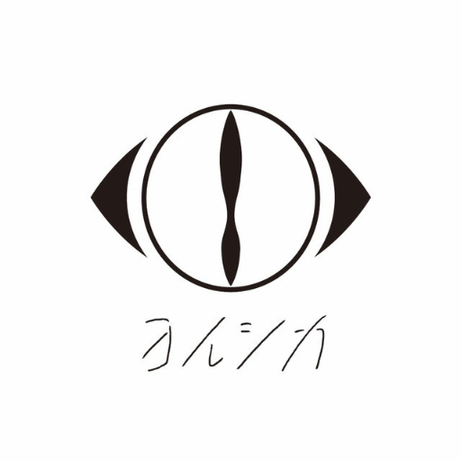

For the blind, they are vision. For the hungry, they are food. For the thirsty, they are water. If they write, I read. If they sing, I listen. If they create, I glaze. If they have a million fans, I am one of them. If they have ten fans, I am one of them. If they have only one fan, that is me. If they have no fans, then I am dead.
Biography
2017.06.28
夏草が邪魔をする
(The Summer Grass is Getting in My Way)
2018.05.09
負け犬にアンコールはいらない
(A Loser Doesn't Need an Encore)
2019.04.10
だから僕は音楽を辞めた
(That's Why I Gave Up on Music)
2020.07.29
盗作
(Plagiarism)
2023.04.05
幻燈
(Dream Lantern)
2026.03.04
二人称
(Second Person)
Teacher, I want to talk about my life.
What should I do from now on?
Are you just going to tell me ‘no one knows that’ or something?
Look, it’s not that I want to suffer.
I just want to live without doing anything.
Is it selfish to just want to look at the blue sky?
Discover the amazing songwriting and instrumentation that Yorushika has to offer!